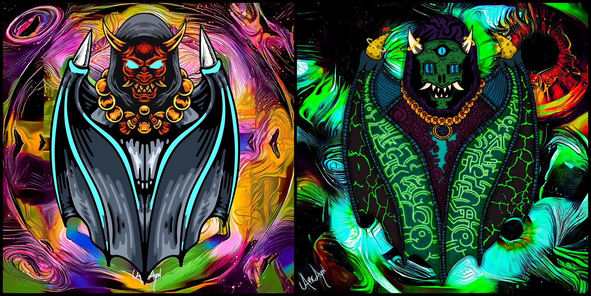

If you're an artist or involved in an NFT project and would like to collaborate with us then please get in touch!

Representing the creators in the space who work together to create and build.
Marketplace links:
The Daemon (ANON #29)
DaemonPunk #128: Anon

Many Daemons were lost in the aftermath of the Mass-Transit Event's premature end, confined in an unknown realm for eternity. Sensing the trapped energy radiating from that strange world, this almighty warrior sought to find and study it.
Marketplace links:
Daemon Fantom Warrior (LFW #197)
DaemonPunk #340: Lost Warrior

Even after its journey across the cosmos to Sol, this Daemon's thirst for adventure was not sated. Thankfully, the wonders of the Metaverse beckoned...
Marketplace links:
Welcome to the Metaverse (DMN #13)
The First Daemon Netizen (DMN #12)

The Daemon Skull
Marketplace link:
Poxxy Skull 074 (PXY #83)
01101010 01101111 01101001 01101110 00100000 01110100 01101000 01100101 00100000 01100100 01100001 01100101 01101101 01101111 01101110 01100100 01100001 01101111
Marketplace links:
Daemon BinaryPunk (PUNKS #4411)
Binary BitDaemon (BDMN #31)
This fearsome Daemon was separated from the horde in the chaos of the Mass-Transit Event, finding refuge in an uncharted subterranean domain. In assimilating the chiropteran appearance of Potluck Protocol's mascot, it also manifested their drive to build on Fantom.
Marketplace link:
$FANG Daemon (DMN #21)

Back to the lab...

Marketplace links:
ArcAyn X CotC
ArcAyn X CotC II: Mutants
ArcAyn X CotC II: Zombies

Daemon damned if ya do, Daemon damned if ya don't
Marketplace link:
ArcAyn & Gui Collab Banner (GSCS #32)
Ribbit ribbit

Marketplace link:
Frog 13 (FFF #13)
Watch out for Shredder...
Marketplace links:
Daemon Punk (TRTLP #51)
DaemonPunk #344: Raph
Neon chillin'
Marketplace link:
Neon DaemonPunks
Ribbit ribbi-wait where'd you go?!
No marketplace links will be provided as the project/collection is abandoned!